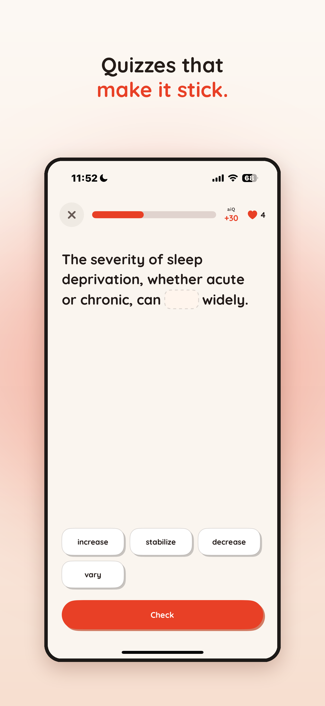
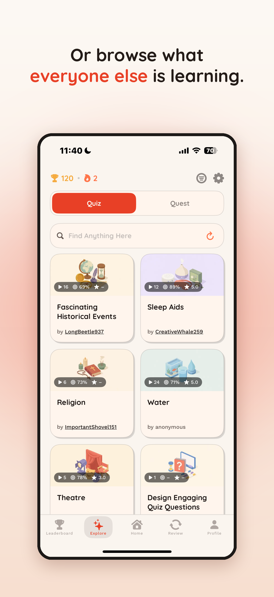
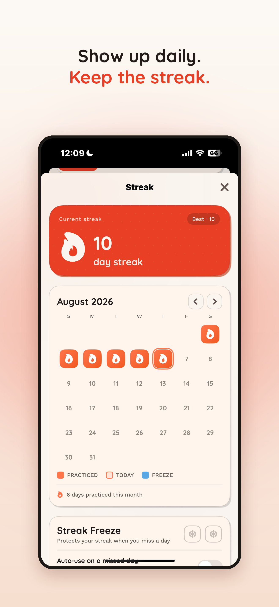
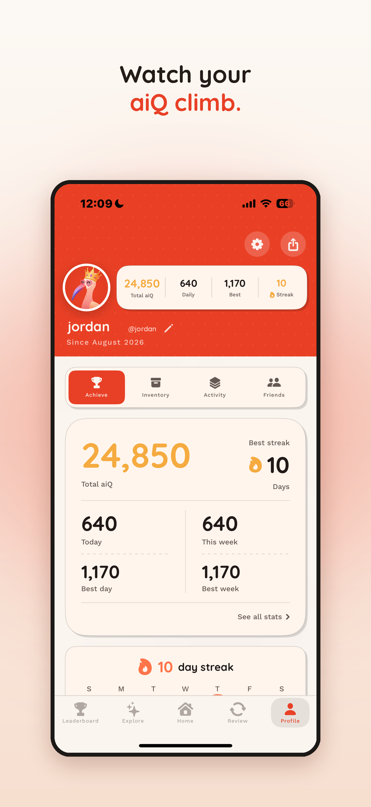

AIQ
Making learning more fun with AI-powered courses, short lessons, and quizzes.
App Store ↗


My role
I led a team of college students, shipping features and guiding product priorities through customer research and analytics. I also designed and ran Meta ads.
Built with AI coding tools using Swift, SwiftUI, Supabase, and OpenRouter/OpenAI, with PostHog for product analytics.
Building the learning experience
I built a conversational course creator that asks about a learner’s background and goals, then generates a personalized plan and lesson outline.
To address slow generation, the course map opens once its structure is ready, while lessons generate progressively. Standalone quizzes load two questions first and generate the remaining eight in the background.
Response validation filters malformed and duplicate questions, then requests only the missing content. Retries simplify question formats when needed, and loading states distinguish ongoing generation from an actual failure.




Research & experimentation
A consumer survey revealed strong interest in habit-building features, especially streaks. I used those findings to refocus ad messaging on people already motivated to learn, then monitored ad performance and retention.
We tested quiz-first and journey-first onboarding flows using PostHog, measuring completion without abandonment and tracking drop-off. The experiment is ongoing; we haven’t decided which flow to adopt.